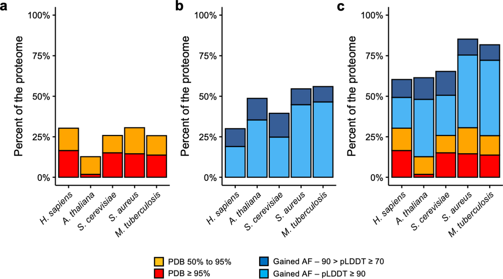

Protein modeling in the AlphaFold era
1 The history of protein structure modeling is told by a competition (CASP)
Every two years since 1994, groups in the field of structural bioinformatics have conducted a worldwide experiment in which they predict a set of unknown protein structures in a controlled, blind test-like competition and compare their results with the experimentally obtained structures. That is the CASP or Critical assessment of Protein Structure Prediction.

The best research groups in the field test their new methods and protocols in the CASP. However, at CASP13 (2018), an AI company called Deepmind (Google Subsidiary) entered the scene. Their method, named Alphafold (Senior et al. 2020) clearly won CASP13. Alphafold (v.1) implemented improvements in some recently used approaches and created an entirely new pipeline. Instead of creating contact maps from the alignment and then folding the structure, they used an MRF unit (Markov Random Field) to extract the main features of the sequence and MSA in advance and process all this information into a multilayer NN (called ResNet) that also predicted distance probabilities instead of contacts, resulting in high accuracy. Then, Alphafold uses all the possibly obtained information to create the structure and then improve it by energy minimization (steepest descent method) and substitution of portions with a selected DB of protein fragments.

After Alphafold, similar methods were also developed and made available to the general public, like the trRosetta (Yang et al. 2020), from the Baker lab, available in Rosetta open source software and in the Robetta server. This led to some controversy (mostly on Twitter) about the open access to the CASP software and later on DeepMind publishes all the code on GitHub.
2 CASP14 or when protein structure prediction come to age for (non structural) biologists
There was a lot of hype in CASP14 and the guys from DeepMind did not disappoint anyone. Alphafold2 left all competitors far behind, both in relative terms (score against the other groups) and in absolute terms (lowest alpha-carbon RMSD). As highlighted earlier, the accuracy of many of the predicted structures was within the margin of error of the experimental determination methods (see for instance Mirdita et al. 2022).


Deepming took some time (eight months, which is an eternity nowadays) to publish the method (Jumper et al. (2021)) and to release the code on Github, but other new methods, such as RoseTTAfold (Baek et al. (2021)) and C-I-Tasser (Zheng et al. (2021)) were able to obtain similar results and were available on public servers, which may have pushed Deepmind to make it all available to the scientific community1. Not surprisingly, a group of independent scientists (Sergey Ovchinnikov, Milot Mirdita, and Martin Steinegger), decided to implement Alphafold2 in a Colab notebook, called ColabFold Mirdita et al. (2022), which freely available online using Google Colab notebooks platform. Other free implementations of Alphafold have been and are available, but ColabFold has been the most widely discussed and well known. They implemented some tricks to speed up the modeling, most notably the use of MMSeqs2 (developed by Martin Steinegger’s group) to search for homologous structures on Uniref30, which made Colabfold a fast method that made all the previous advanced methods almost useless. This was the real breakthrough in the field of protein structure prediction, making Alphafold accessible and, also very importantly, facilitated the further development of the method, implementing very quickly new features, like the prediction of protein complexes, which was actually first mentioned on Twitter and then led to several new dedicated methods, including AlphaFold-multimer (Evans et al. 2022) from Deepmind or AlphaPullDown (Yu et al. 2023).
3 Alphafold as the paradigm of a New Era
Why is Alphafold so freaking accurate?
The philosophy behind Alphafold v.2 (from now on, just Alphafold) and related methods is to treat the protein folding problem as a machine learning problem, similar to image processing. In all of these problems, the input to the Deep Learning model is a volume (3D tensor). In the case of computer vision, 2D images expand as volumes because of the RGB or HSV channels. Similarly, in the case of distance prediction, predicted 1D and 2D features are transformed and packed into a 3D volume with many channels of inter-residue information (Pakhrin et al. 2021).

Alphafold can be explained as a pipeline with three interconected tasks (see picture below). First, in contrast to Alphafold v.1, the input to Alphafold is a “raw” MSA, i.e., the deep learning network extracts the co-evolutionary information directly from the MSA. It queries several databases of protein sequences and constructs an MSA that is used to select templates. This can be a limiting step, affecting the speed of modeling (see below), but it can be also related to model accuracy, as has been recently shown in CASP15 (Lee et al., n.d.; Peng et al. 2023).
In the second part of the diagram, AlphaFold takes the multiple sequence alignment and the templates, and processes them in a transformer. This process has been referred by some authors as inter-residue interaction map-threading (Bhattacharya et al. 2021). The objective of this part is to extract layers of information to generate residue interaction maps. A better model of the MSA will improve the network’s characterization of the geometry, which simultaneously will help refine the model of the MSA. Importantly, in the AF2 Evoformer, this process is iterative and the information goes back and forth throughout the network. At every recycling step, the complexity of the map increases and thus, the model improves (the original model uses 3 cycles). As explained in the great post from Carlos Outerial at the OPIG site:
This is easier to understand as an example. Suppose that you look at the multiple sequence alignment and notice a correlation between a pair of amino acids. Let’s call them A and B. You hypothesize that A and B are close, and translate this assumption into your model of the structure. Subsequently, you examine said model and observe that, since A and B are close, there is a good chance that C and D should be close. This leads to another hypothesis, based on the structure, which can be confirmed by searching for correlations between C and D in the MSA. By repeating this several times, you can build a pretty good understanding of the structure.
The third part of the pipeline is the structure building module, which uses the information from the previous steps to construct a 3D model structure protein of the query sequence. This network will give you a single model, without any energy optimization step. Model building is based in a new concept of 3D structures generation, named IPA (Invariant Point Attention) and the use of a curated list of parametrised list of torsion angles to generate the side chains. Earlier attempts to develop and end-to-end method were unsuccessful because the structure representation was not optimal. Even methods implemented after AlphaFold, like RoseTTAFold, use less efficient methods and often predict very quickly and accurately the backbone coordinates but require external programs to generate an all-atoms model

Like for most of the previous methods Alphafold would give your better results with proteins with related structures known and with a lot of homologs in Uniref databases. However, comparing to nothing, it will likely give you (limited) useful results for the so-called “dark genome”. I work with phages and bacterial mobile elements, and sequencing that is often frustrating as more than 50% of the proteins have no homologous in the database. So you have a bunch of proteins of unknown function… However, as we do know that structure is more conserved than sequence, we may use the structure to find out the function of our dark proteins. There are a few resources for this, I’d suggest you to try FoldSeek (Kempen et al., n.d.) and Dali (Holm 2022) servers. You can upload the PDB file of your model and search for related structures in RCSB PDB database and also in Alphafold database.
FoldSeek needs only a few seconds/minutes and is therefore faster than Dali. Therefore, it is better to use Dali for some selected searches that require a double check or a more reliable result, even if it may take a few days.
As mentioned above, Colabfold aims to make the process faster by using MMSeqs in the first block. Additionally, the number of recycling steps can also be adapted. Moreover, different Colabfold notebooks have been developed (and evolved) to allow some customization and other feature, like batch processing of multiple proteins avoiding recompilation and identification of protein-protein interactions (Mirdita et al. 2022).
Alphafold models can be evaluated by the mean pLDDT, a per-residue confidence metric. It is stored in the B-factor fields of the mmCIF and PDB files available for download (although unlike a B-factor, higher pLDDT is better). The model confidence can vary greatly along a chain so it is important to consult the confidence when interpreting structural features. Very often, the lower confidence fragments are not product of a poor prediction but an indicator of protein disorder (Wilson, Choy, and Karttunen 2022).
Alphafold also partnered with EMBL-EBI and Uniprot and generated a huge curated database of proteins from model organisms (Varadi et al. 2022), the Alphafold database. This is an amazing resource that may be also very helpful for you. Just consider that this database increased from 48% to 76% the fraction of human proteome with structural data, and also it also means great increases in the case of other model organisms, like, including microorganisms and plants (Porta-Pardo et al. 2022).

Wanna try Alphafold?
Section under construction!
As mentioned above, the grand breakthrough of Alphafold would not have been the same without the Colabfold, a free open tool that made the state-of-the-art of AI-fueled protein prediction available to everyone.
The Colabfold repository on GitHub contains links to several Python notebooks developed on Google Colab, a platform to develop and share Python scripts on a Jupyter Notebook format. Notebooks are very important also for reproducibility in computer sciences, as they allow you to have the background and details and the actual code in a single document and also execute it. You can share those notebooks very easily and also update quickly as they are stored in your Google Drive.
Colabfold allow you to run notebooks of Alphafold, RoseTTAfold, and ESMFold for specific applications, allowing even to run a bunch of proteins in batch. You can see a more detailed description in Mirdita et al. (2022). We are using the Alphafold2_mmseqs2 notebook, that allow you most of the common features. You need to allow Colab to use your Google account.

Then paste your sequence and chose a name. For more accurate models you can click “use_amber” option. It will run a short Molecular Dynamics protocol that ultimately optimize the modeling, but it will also take some more time, so better try at home.
As you can see, an this is a recent feature, you can also add your own template, which combines the classical “homology modeling” based upon a single template with the advanced AlphaFold model construction method. That will safe time, but of course without any guarantee. If you have a template of a related protein, like an alternative splicing or a disease mutant, I’d advise you to try with and without the template. You may surprise.
At this point, you may execute the whole pipeline or may some more customization. MSA stage can be also optimized to reduce execution time, by reducing database or even by providing your own MSA. Very often you may want to fold a protein with different parameters, particularly in the Advanced Colabfold, which may very convenient to reuse an MSA from a previous run (although they recently updated servers for MMSeqs and made it really faster). If your proteins are in the same operon or by any other reason you think that they should have co-evolved, you prefer a “paired” alignment. But you can always do both.
Advanced settings are specially needed for protein-protein complexes. Also the number of recycling steps will improve your model, particularly for targets with no MSA info from used databases. Then you can just get your model (and companion info and plots) in your GDrive or download it.
What do you think is the ideal protein for AlphaFold? Do you think homology modeling is dead?
Now what? The Post-AlphaFold era
As mentioned earlier, RoseTTAFold was released at the same time as AlphaFold’s paper and code, although it is clearly inspired by AlphaFold’s capabilities in CASP14. It is based on a three-track network, and recent implementations have allowed prediction of protein interactions with nucleic acids. Other methods such as AlphaFold and RoseTTAFold were released later, as were OpenFold and UniFold, which are based on the PyTorch Transformers AI framework.
The use of MSA has been cited as a limitation for AlphaFold and related methods. However, the predictions are significantly worse without MSA or with MSAs without depth. One way to improve predictions is to use a protein natural language model (PLN), i.e., a model trained to predict sequence from sequence and not dependent on good MSAs. Omegafold and ESMfold (also in Colabfold, here and here, respectively) are two new implementations that require only a single sequence. They are quite fast and perform better than AlphaFold when using a single sequence. However, since PLN is trained on existing sequences, these methods still perform significantly worse on orphan sequences. That is, the language models seem to just remember the training MSAs Elofsson (2023).
The appearance of ESMfold and the companion Metagenomic Atlas Lin et al. (2023) was seen as a new step that could trigger a new revolution in the field, since it was developed by scientists at META Callaway (2022). So it was now a sort of Google versus Facebook battle for the most powerful AI methods for protein modeling. Last summer, however, we learned that META had decided to discontinue the ESM project.
AlphaFold was again the protagonist of CASP15, which took place in 2020, but it did not overwhelm the rest like in 2018.
AlphaFold was used in some form in more than half of the protocols, and while the standard AlphaFold method performed better than many other methods, several groups achieved significant improvements for monomeric proteins and protein assemblies. In short, we learned at CASP15 that there are two main ways to improve AlphaFold: (1) more efficient use of templates, increasing the size of the database or sampling through more efficient MSAs, or (2) hacking AlphaFold to use dropouts to generate thousands of models for each target, which increases computational time but also increases the chances of better models. Other small improvements have been proposed, such as using improved template search or new scoring capabilities based on Voronoi surfaces or Deep Learning Elofsson (2023).
2021-2023 - Short summary in one
Corollary: Did Deepmind “fold” Levinthal’s paradox?
The development of Alphafold and the Alphafold structures Database in collaboration with EMBL-EBI was been the origin of a New Era. Moreover, in a further turn, the Metagenomic Atlas by Meta AI uncovers virtually the whole protein space. Scientific publications and journals worldwide published long articles about the meaning of this breakthrough in science and its applications in biotechnology and biomedicine2 and DeepMind claimed to have Solved a 50-years Grand Challenge in biochemistry. The coverage of the protein structure space has been greatly increased (Porta-Pardo et al. 2022).
However, some scientists have claimed that Alphafold2 and RoseTTAfold actually “cheat” a bit as it does not really solve the problem but generate a deep learning pipeline that “bypass” the problem (Pederson 2021). In agreement with that, it has been shown that machine learning methods actually do not reproduce the expected folding pathways while improving the structures during the recycling steps Outeiral, Nissley, and Deane (n.d.).
In other words, after AlphaFold, would it no longer be necessary to perform X-ray crystallography or nuclear magnetic resonance? First, AlphaFold models can be used in electron density maps and help solve complex cases. Thus, the new framework helps crystallographers focus their work on the most unresolved and difficult structures, such as coiled-coils or holoproteins, which cause modulations and challenges in the development of crystallographic methods.
In conclusion, I believe that the Levinthal paradox is not (yet) fully solved, although it seems to be close (Al-Janabi 2022). Practically, it is solved for most of the protein space, but if your protein does not have a homolog in the databases, you will still have some open questions.
4 Review Quizz
AlphaFold and RoseTTAFold are two programs that have been designed to?5 Useful links
Introductory article to Neural Networks at the IBM site: https://www.ibm.com/cloud/learn/neural-networks
ColabFold Tutorial presented presented by Sergey Ovchinnikov and Martin Steineggerat the Boston Protein Design and Modeling Club (6 ago 2021). [video] [slides].
Post about Alphafold2 in the Oxford Protein Informatics Group site: https://www.blopig.com/blog/2021/07/alphafold-2-is-here-whats-behind-the-structure-prediction-miracle/
A very good digest article about the AlphaFold2 paper: https://moalquraishi.wordpress.com/2021/07/25/the-alphafold2-method-paper-a-fount-of-good-ideas/
Post on the AlphaFold revolution meaning in biomedicine at the the UK Institute for Cancer Research website: https://www.icr.ac.uk/blogs/the-drug-discoverer/page-details/reflecting-on-deepmind-s-alphafold-artificial-intelligence-success-what-s-the-real-significance-for-protein-folding-research-and-drug-discovery
A post that explain how AlphaFold and related methods can be used to create new structures: https://theconversation.com/when-researchers-dont-have-the-proteins-they-need-they-can-get-ai-to-hallucinate-new-structures-173209
References
Footnotes
See https://www.wired.com/story/without-code-for-deepminds-protein-ai-this-lab-wrote-its-own/↩︎
https://www.bbc.com/news/science-environment-57929095
https://www.forbes.com/sites/robtoews/2021/10/03/alphafold-is-the-most-important-achievement-in-ai-ever/
https://elpais.com/ciencia/2021-07-22/la-forma-de-los-ladrillos-basicos-de-la-vida-abre-una-nueva-era-en-la-ciencia.html↩︎